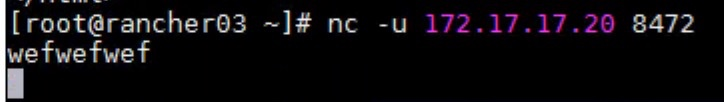
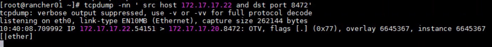

记一次K8S VXLAN Overlay网络8472端口冲突问题的排查
环境
服务器：172.17.17.20-22 三个服务器 （深信服aCloud虚拟化平台）
操作系统版本：CentOS 7.8
内核版本：3.10
现象
在20-22三台上安装K8S集群（通过rancher的rke安装），安装完毕后，发现访问各个节点的80端口，只有20服务器能够正常返回，其余的都是Gateway Timeout。使用Rancher的提供的这个办法得知Overlay网络不通。
排查过程
排查网络通性
根据Rancher文档上提到的，Host的8472/udp端口是Flannel/Calico的VXLAN Overlay网络专用端口，即所有跨Host的容器间网络通信都走这个端口。因此：
在172.17.17.22上，用tcpdump抓发出的包：
tcpdump -nn 'udp and src host 172.17.17.22 and dst port 8472'
另开一个22的终端，执行 curl http://localhost 能够看到 22->20 的UDP包，见下图：
在172.17.17.20上，用tcpdump抓收到的包：
tcpdump -nn 'udp and src host 172.17.17.22 and dst port 8472'
结果是没有抓到任何包。
排查虚拟机网络安全组
合理怀疑虚拟机网络安全组没有放开8472/udp端口的访问权限，在22上使用netcat发送数据：
nc -u 172.17.17.20 8472
随便打点字回车传输，如下图：
结果在20上能够抓到收到的包：
这说明网络安全组并没有阻拦8472/udp端口的访问。
初步假设
怀疑这些数据在深信服aCloud虚拟化平台的网络中被过滤掉了。基于以下理由：
- k8s使用的是基于VXLAN的Overlay network，VNI=1，并且是基于UDP协议。而深信服aCloud高概率也使用VXLAN做Overlay网络。
- 普通的udp协议数据传输tcpdump能够抓到包（见前面）
- tcpdump在网络栈中的位置inbound在iptables之前，outbound在iptables之后（资料）。如果tcpdump能够抓到发出的包，那么说明是真的发出了。如果inbound没有抓到接受的包，那么就说明这个包没有到达网卡。
解决办法
和深信服的同学沟通后，其确认是物理机也是用了8472/udp端口做Overlay网络，两者冲突了，因此当UDP包内包含了OTV数据内容后，先一步被aCloud拦截，结果就是虚拟机的8472/udp端口收不到数据。
将物理机的8472/udp端口改掉后，问题解决。
PS. 8472/udp还是一个著名端口
解决办法2
也可以在rke创建k8s集群的时候修改flannel的端口，例如在cluster.yml中添加：
network:
plugin: canal
options:
canal_flannel_backend_port: 8872